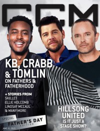
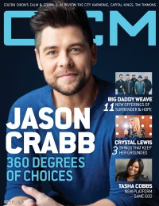

CMnexus
:
Contemporary Christian culture, music, and media.
Browse Magazines
Browse Profiles
cmnexus.org
CM
nexus
→
Profiles
→
C
Jason Crabb
On the cover

15 June 2015
CCM Digital

15 September 2015
CCM Digital
Media coverage:
Sep 2005 in
CCM
"5 Questions With: Jason Crabb"
Jun 2010 in
CCM Digital
"The Fringe: Jason Crabb", by
Andrew Greer
Oct 2011 in
CCM Digital
"What's New: Jason Crabb", by
Andy Argyrakis
Oct 2011 in
CCM Digital
"Musicians Corner: In the Studio: Jason Crabb", by
Andrew Greer
Oct 2011 in
CCM Digital
"Musicians Corner: Gear Guide: Jason Crabb", by
Andrew Greer
Dec 2012 in
CCM Digital
"Great Expectations", by
Caroline Lusk
Jan 2013 in
CCM Digital
"On the Horizon", by
Caroline Lusk
Feb 2013 in
CCM Digital
"Musicians Corner: In the Studio: Jason Crabb"
Mar 2013 in
CCM Digital
"Beyond Borders", by
Caroline Lusk
15 Jun 2015 in
CCM Digital
"Happy Father's Day: Firm Foundations"
15 Sep 2015 in
CCM Digital
"360 degrees of choices: Whatever The Road", by
Barton Green
Albums & reviews:
2009
:
Jason Crabb
Oct 2009 in
Worship Leader
, by
Daryl Bryant
2010
:
Because It's Christmas
Nov 2010 in
CCM Digital
, by
Andy Argyrakis
Dec 2010 in
Christianity Today
, by
Andrew Greer
2011
:
The Song Lives On
Oct 2011 in
CCM Digital
, by
Andy Argyrakis
2013
:
Love Is Stronger
Mar 2013 in
CCM Digital
, by
Andrew Greer
2015
:
Whatever The Road
1 Sep 2015 in
CCM Digital
, by
Kevin Sparkman
2018
:
Unexpected
Award Summary
(
Nominations
/
Wins
)
Dove Awards
2005 Dove Awards
Male Vocalist
2006 Dove Awards
Male Vocalist
2010 Dove Awards
Male Vocalist
Artist
Country Album
:
Jason Crabb
Country Recorded Song
: "Somebody Like Me"
2011 Dove Awards
Song
: "Sometimes I Cry"
Male Vocalist
Artist
Inspirational Recorded Song
: "Joseph"
Traditional Gospel Recorded Song
: "Go Tell It On The Mountain"
2012 Dove Awards
Song
: "Who Am I"
Male Vocalist
Southern Gospel Album
:
The Song Lives On
Artist
Long Form Music Video
:
The Song Lives On
Contemporary Gospel Recorded Song
: "I'd Rather Have Jesus"
Traditional Gospel Recorded Song
: "I Saw The Light"
Country Recorded Song
: "Why Me"
2013 Dove Awards
Song
: "What the Blood is For"
Inspirational Album
:
Love Is Stronger
Southern Gospel Recorded Song
: "What The Blood Is For"
Inspirational Recorded Song
: "Satisfied"
Contemporary Gospel Recorded Song
: "God's Up To Something"
Southern Gospel Performance
: "What The Blood Is For"
2014 Dove Awards
Short Form Music Video
: "Love Is Stronger"
Southern Gospel Recorded Song
: "Love Is Stronger"
Southern Gospel Performance
: "Love Is Stronger"
2018 Dove Awards
Southern Gospel Recorded Song
: "Washed By The Water"
Bluegrass/Country/Roots Album
:
Unexpected
2019 Dove Awards
Southern Gospel Artist
Grammy Awards
2009 Grammy Awards
Best Southern, Country, or Bluegrass Gospel Album
:
Jason Crabb
2015 Grammy Awards
Best Contemporary Christian Music Album
:
Whatever The Road
2018 Grammy Awards
Best Roots Gospel Album
:
Unexpected
Published articles:
1 article credited in
Charisma
: 2011.
Credits list
CMnexus
(noun)
The magazine index
of modern music
and Christianity
© 2011 CMnexus. Last updated September 2019.
Contact:
Rants and other correspondence to:
editor -AT- cmnexus
-DØT- org
About